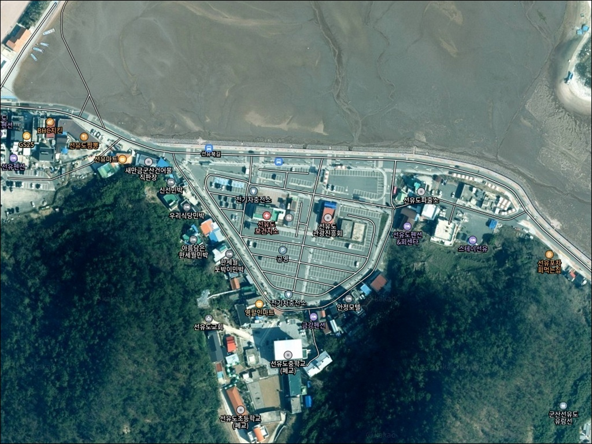
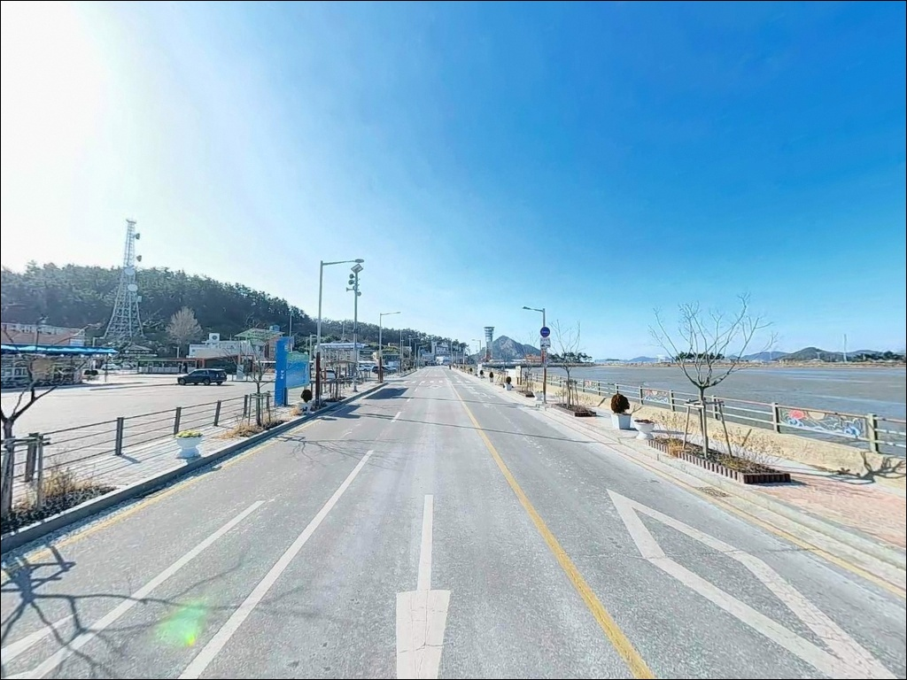
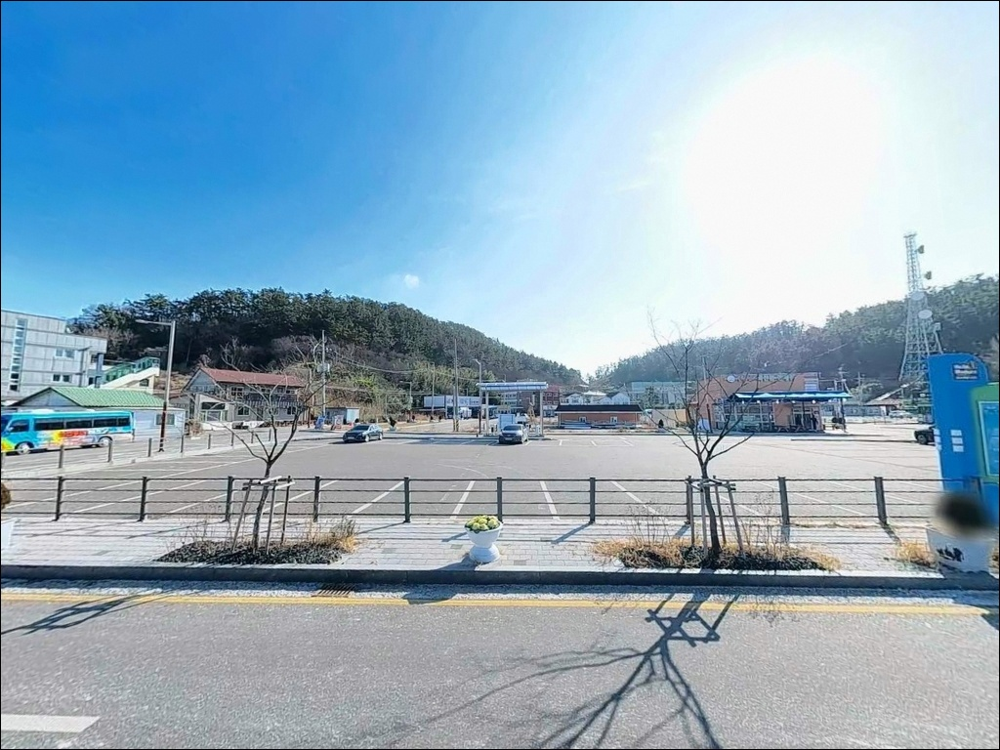
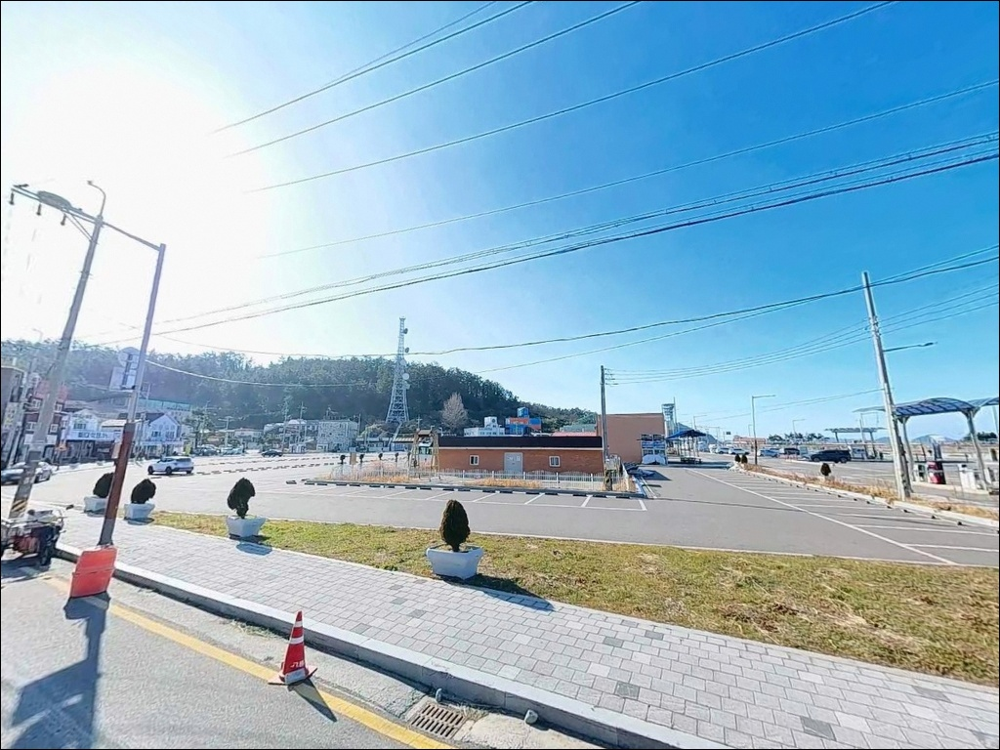
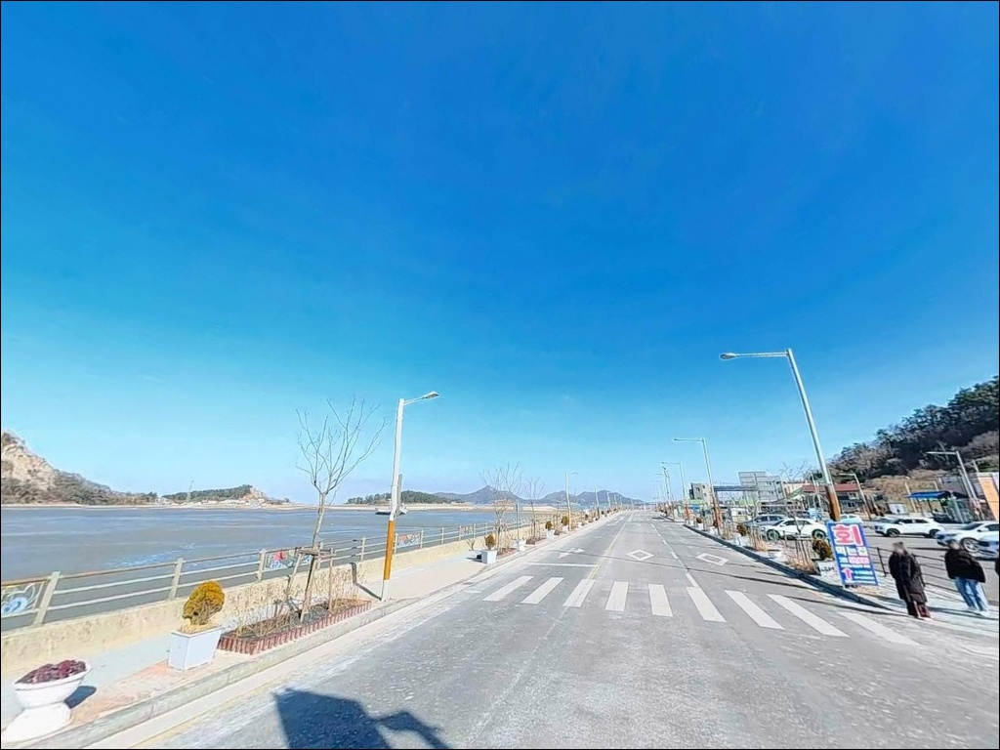
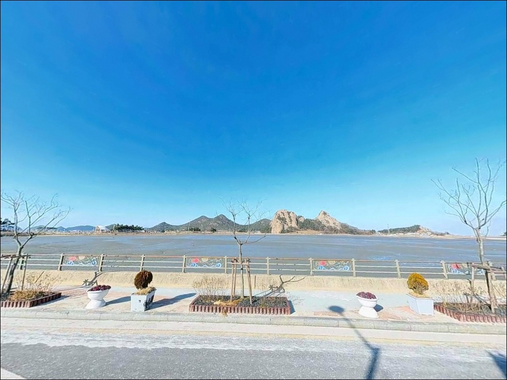
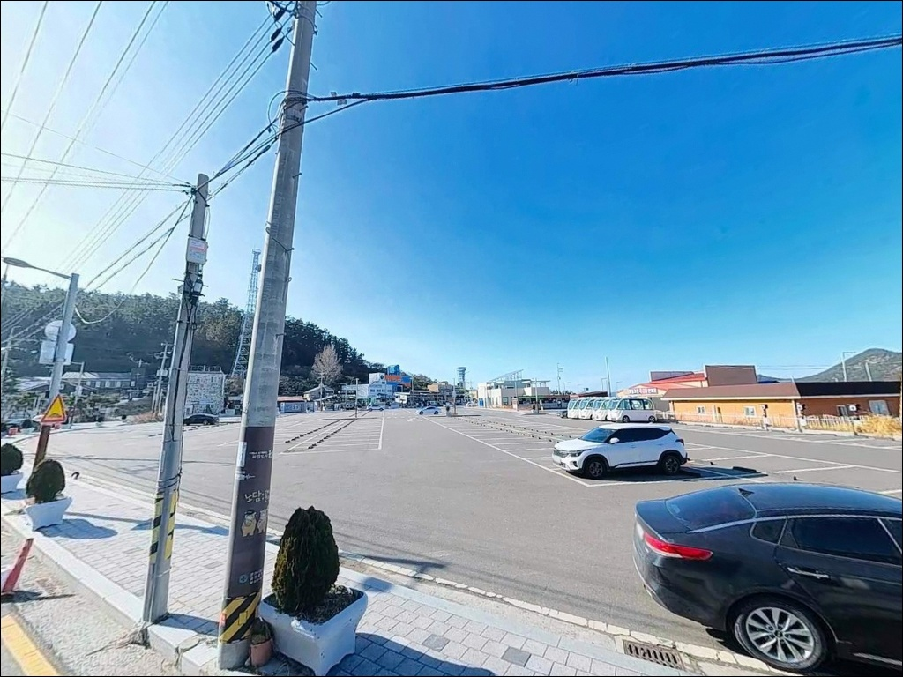
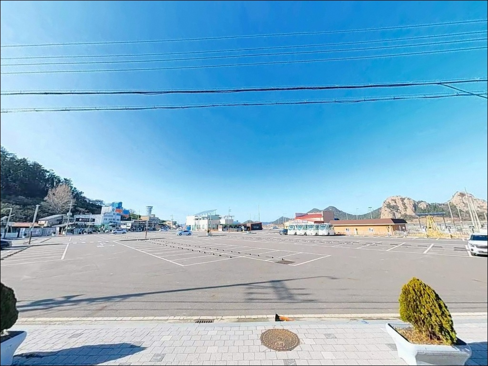
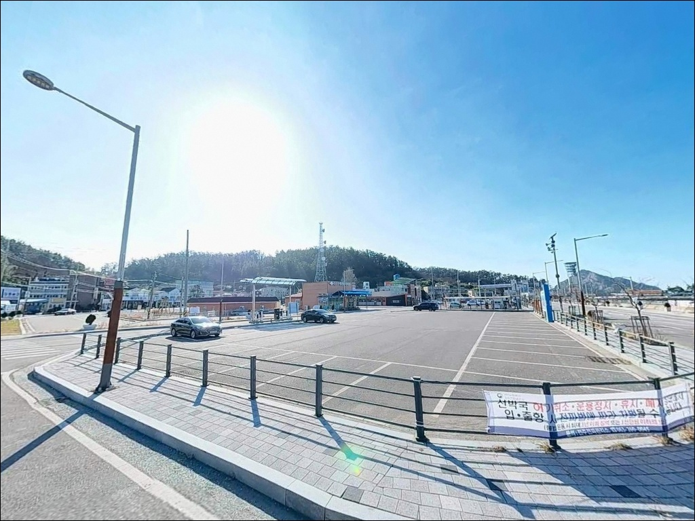

선유도해수욕장 공영주차장, 선유도 전북 군산시 풍경이 깊은 여운을 남기는 차박, 낚시 해안


포인트 안내
선유도해수욕장 공영주차장
전북 군산시 옥도면 선유도리 279-8
선유도해수욕장 공영주차장을
낚시 포인트와 같은 곳으로 알고 진입하면
채비를 펼칠 자리 자체가 없습니다.
이 공영주차장의 역할은 낚시터가 아니라
기도등대 방파제(선유3구)로 이동하는
베이스캠프이며,
방파제 자체에는 차량 진입이 막혀 있습니다.
이 글은 선유도 기도등대 방파제의
낚시 지형 조건, 진입 구조,
차박 거점으로서의 활용 여건,
그리고 고군산군도 대안 포인트 동선에 집중합니다.
조황 단정이나 특정 어종 보장은
이 글의 범위에 포함되지 않습니다.

1. 진입 동선과 포인트 접근 구조
선유도는 새만금방조제와 연륙교로
육지에서 차량이 직접 들어올 수 있는 섬입니다.
공영주차장(선유2구)은 해수욕장 입구 바로 뒤편에 위치하며
넓고 포장된 구조라
대형 SUV나 캠핑카도 회차에 큰 어려움이 없는 편입니다.
낚시 포인트인 기도등대 방파제(선유3구)는
이 공영주차장에서 도보로 이동해야 닿는 거리에 있습니다.
방파제 내 차량 진입은 쓰레기 문제 등으로 인해
현재 막혀 있는 상태입니다.
장비를 챙겨 이동해야 하므로
보조 캐리어나 낚시 배낭 등 이동 채비를 미리 갖추는 편이
현실적인 준비 방식입니다.
섬 내부 도로는 성수기에 관광 차량이 몰려
정체가 심해지는 구간이 있습니다.
여름철 방문이라면 이른 오전 진입이
주차 확보와 이동 효율 모두에 유리합니다.

2. 차박 환경과 야간 체류 여건
선유도해수욕장 공영주차장은
관광지 메인 주차장 성격이라
주변에 상가, 숙박시설, 짚라인 시설 등이 밀집해 있습니다.
가로등이 있어 야간 시야 확보는 무난하지만
프라이버시를 기대하기 어려운 구조입니다.
비수기(봄·가을·겨울 주말 기준)에는
야간 인파가 크게 줄어 상대적으로 조용해집니다.
낚시 후 짧게 머무는 용도로는 활용 가능한 구조이지만,
성수기(7~8월)에는 차박 목적으로 쓰기에
혼잡도가 상당히 높습니다.
차박 메인 거점으로 활용할 계획이라면
비성수기 방문을 기준으로 잡는 것이 맞습니다.
공영주차장은 유료 운영 체계로 운영됩니다.
야간 주차 가능 여부는 현장 안내판을 먼저 확인하는 것이 기본입니다.
지정 구역 외 취사·텐트 설치는 원칙적으로 금지 대상이므로
방문 전 군산시 관할 규정을 확인하는 편이 좋습니다.


3. 주변 편의시설 및 인프라 현황
공영주차장 내 공중화장실이 확인되며,
해수욕장 입구 일대에는 장애인 화장실도 갖춰져 있습니다.
해수욕장 시즌(7~8월 중)에는 샤워장이 운영되며,
주차장 인근에는 해산물 식당이 다수 분포해 있습니다.
식당 외에도 선유도 내에는
자전거 대여소와 유람선 선착장이 있습니다.
반경 10km권에는 신시도항, 비응항 등이 있어
대규모 낚시 인프라를 이용하거나
선상낚시 출조 업체를 이용하는 것도 가능합니다.
대형 편의점 체인의 존재 여부는
현장 확인이 필요한 항목입니다.
섬 지역 특성상 출발 전 식수·얼음·낚시 소품·연료를
육지에서 미리 갖춰두는 편이 안전합니다.

4. 방문 전 반드시 챙겨야 할 준비사항
서해 고군산군도는 조수간만의 차가 크므로
물때 확인이 모든 준비의 첫 번째입니다.
간조 시간에 진입하면 채비가 바닥에 걸리거나
수심이 너무 얕아 입질 자체가 줄어드는 상황이 됩니다.
바다타임에서 선유도 기준 물때를 확인하고
만조 전후 2~3시간 타이밍에 맞춰 입장하는 것이 기본 전략입니다.
기도등대 방파제까지 도보 이동이 필요하므로
채비는 가볍게 정리하는 편이 좋습니다.
석축 구조 방파제라 발판은 비교적 안정적인 편이지만
조류에 따라 미끄러울 수 있어
미끄럼 방지 신발은 기본 장비에 포함해야 합니다.
구명조끼는 방파제 이동 시 착용하는 것이 원칙입니다.
야간 출조라면 헤드랜턴도 필수입니다.
쓰레기 문제로 방파제 차량 진입이 막힌 경위가 있는 곳이라
낚시 후 발생한 쓰레기는 전량 수거해서 나오는 것이
이 포인트를 유지하는 기본 매너입니다.

5. 기도등대 방파제 외항 석축에서
에깅 조과가 달라지는 조건
기도등대 방파제(선유3구)는
외항 쪽이 테트라포드가 아닌 석축 구조입니다.
석축 면에는 말풀(해조류)이 잘 형성되어 있어
갑오징어가 산란처로 이용하기 좋은 환경 조건을 갖추고 있습니다.
말풀이 발달한 구간을 따라 에기를 천천히 끌어오는 방식이
이 방파제 구조에 가장 잘 맞습니다.
수심은 전반적으로 얕은 편입니다.
해수욕장 쪽 모래 구간으로 가면 수심이 더 완만하게 낮아지며,
방파제 끝단 쪽으로 이동할수록 수심이 다소 깊어지는 구조입니다.
내항과 외항 모두 낚시가 이루어지는 형태이며,
외항 석축 경계선 탐색이 우선 공략 구간입니다.
조수간만의 차에 따라
간조 시간대에는 수심이 더 얕아지는 상황이 됩니다.
서해 고군산군도는 조수간만의 차가 커서
물때를 맞추지 않으면 에깅 채비가 바닥에서 떠돌기만 합니다.
최신 조황은 출조 전 선유도 낚시, 고군산군도 낚시 키워드로
꼭 검색해 보시기 바랍니다.


6. 포인트에 어울리는 낚시 스타일
이 포인트에서 지형 조건과 가장 잘 맞는 방식은
갑오징어 에깅입니다.
외항 석축에 발달한 말풀 지형은
에기를 천천히 끌어오는 방식에 적합한 구조이며,
봄부터 늦가을까지 시즌 폭이 넓은 편이라
연중 방문 메리트가 있는 낚시 스타일입니다.
지그헤드 루어낚시도 이 포인트 지형에 잘 어울립니다.
석축 주변과 암초 경계선을 천천히 탐색하는 방식으로
우럭·놀래미를 기대해볼 수 있는 환경입니다.
야간 입장 시 가로등이 닿는 내항 경계부터
탐색하는 방식이 유효합니다.
원투낚시는 해수욕장 모래 구간을 포함하면
가능한 방식입니다.
모래와 혼합 바닥 구간에서
붕장어를 기대해볼 수 있는 지형 조건이며,
야간 원투가 주력 타이밍입니다.
만조 전후 타이밍에 채비를 멀리 보내
바닥층을 천천히 훑어오는 방식이 기본입니다.

7. 대안 포인트와 플랜 B 동선
기도등대 방파제 여건이 여의치 않으면
선유4구 방파제가 첫 번째 대안입니다.
선유도 내 다른 방파제로
공영주차장을 거점으로 이동 동선을 잡기에
접근 구조가 비슷합니다.
선유대교 신축주차장 일대도
차박과 낚시를 함께 운용하는 대안으로 거론되는 곳입니다.
공영주차장보다 혼잡도가 낮을 수 있어
차박 목적 방문자라면 이쪽 동선을
우선으로 검토하는 편이 낫습니다.
단 현장 상황은 방문 전 별도 확인이 필요합니다.
기도등대 방파제가 기대에 못 미칠 때
가장 자연스러운 이동 순서는 선유4구 방파제입니다.
인근 무녀도의 남들포인트는
바다타임에 등록된 공식 낚시 포인트입니다.
고군산군도 내 같은 조류·수심 계열의 환경이라
선유도 방문 전후로 묶어서
탐색하기 좋은 대안 포인트입니다.

거점을 제대로 이해하고 가면
선유도는 낚시와 차박을 함께 즐기기에
나쁘지 않은 구조입니다
갑오징어 에깅이나 우럭 루어낚시를 즐기는 낚시인이라면
기도등대 방파제의 석축 구조와 말풀 지형은
잘 맞는 환경 조건입니다.
공영주차장을 거점으로 삼아
선유4구 방파제, 무녀도 남들포인트까지
이동형으로 묶어서 다니기에도
고군산군도 전체가 연결되어 있어 동선이 짜기 좋습니다.
반면 공영주차장에서 바로 낚시를 기대하거나,
성수기 한여름에 차박 메인 거점으로 쓰려 한다면
현실과 차이가 생기기 쉽습니다.
물때 확인, 도보 이동 준비, 비수기 방문
이 세 가지를 갖추고 간다면
에깅과 루어낚시를 즐기기에 충분한 포인트가 됩니다.
서해 석축 방파제 옆에서 조용히 하룻밤을 보내며
아침 물때에 에기 한 자루 던지는 차박 여행자라면,
비수기 선유도의 조용한 분위기와
기도등대 방파제의 고요한 석축 앞이
기억에 남는 출조가 될 수 있습니다.